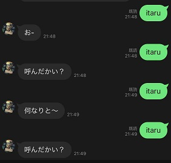
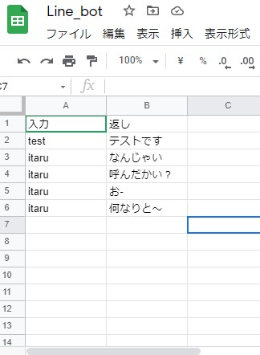

我が家のLine_Botを作るぜ

category：code：My_Line_bot
プログラム概要
主な使用ライブラリ：flask,line-bot-sdk,gspread,oauth2client
やりたかったこと：我が家のオリジナルLine_botを作りたい。でもってgoogle-spreadsheetで返答を簡単に編集したい。
各方面、無課金にて実装できた（これ大事！）。よく見ている「いまにゅのプログラミング塾」の動画を複数参考にさせてもらってます。
こういうやつ

作成手順
1：Google Cloud Platform設定
GoogleアカウントでGCPに登録。クレジットカードの登録が必要。今回の用途（driveとsheets_API）は
登録すれば制限なく無料にて利用可能のようである（R3.7現在）。
プロジェクトを作成し、「APIとサ－ビス」より「Google Drive API」と「Sheets API」を有効化。
「APIとサ－ビス」の認証情報より、サービスアカウントを適当な名前で新規作成し、jsonファイルをダウンロードする。
スプレッドシートを作成し、「共有」ボタンよりjsonファイル内の「client_email」のアドレスを編集者として共有させる。
※スプレッドシートのURLとSheet名が後々必要になるので控えておく。
↓適当に返してほしい文字列を入れておく

2：LINE Developers設定
LINE DevelopersにLineアカウントでサインイン。
messaging-api
のページでプロバイダを新規登録する。
ここでは「チャネル基本設定」タブの「チャネルシークレット」と
「Messaging API設定」タブの「チャネルアクセストークン」を控える。
3：line-bot-sdkで実装
いよいよpythonで実装。LINE公式ライブラリの「line-bot-sdk」のpythonのGithubリポジトリより、入力をそのままオウム返し
するコードが書いてあるため借用。
import os
import random #後で使う
import pandas as pd
import gspread
from flask import Flask, request, abort
from linebot import (
LineBotApi, WebhookHandler
)
from linebot.exceptions import (
InvalidSignatureError
)
from linebot.models import (
MessageEvent, TextMessage, TextSendMessage,
)
from datetime import datetime, timedelta
from oauth2client.service_account import ServiceAccountCredentials
app = Flask(__name__)
#実際は直書きはせず、os.environでherokuの環境変数に入れる。後述。
YOUR_CHANNEL_ACCESS_TOKEN="手順2のチャネルトークン"
YOUR_CHANNEL_SECRET="手順2のチャネルシークレット"
line_bot_api = LineBotApi(YOUR_CHANNEL_ACCESS_TOKEN)
handler = WebhookHandler(YOUR_CHANNEL_SECRET)
@app.route('/')
def hello_world():
return "hello_world"
@app.route("/callback", methods=['POST'])
def callback():
# get X-Line-Signature header value
signature = request.headers['X-Line-Signature']
# get request body as text
body = request.get_data(as_text=True)
app.logger.info("Request body: " + body)
# handle webhook body
try:
handler.handle(body, signature)
except InvalidSignatureError:
print("Invalid signature. Please check your channel access token/channel secret.")
abort(400)
return 'OK'
#ここまでほぼ100%公式のまま。ここからちょっと変更して、オウム返しでなく、スプレッドシートから返答を引き出す仕様に。
@handler.add(MessageEvent, message=TextMessage)
def handle_message(event):
reply = get_record(event.message.text)
line_bot_api.reply_message(
event.reply_token,
TextSendMessage(text=reply))
#GCPの認証して、スプレッドシートの任意のシートを返す関数。
def auth():
#手順1で用意したjsonファイルを'secret.json'という名前で同一ディレクトリに。
SP_CREDENTIAL_FILE = 'secret.json'
# APIを利用する範囲
SP_SCOPE = [
'https://spreadsheets.google.com/feeds',
'https://www.googleapis.com/auth/drive'
]
SP_SHEET_KEY = '手順1で用意したスプレッドシートのURLのd/より後から/editの前まで'
SP_SHEET = 'シート名'
credentials = ServiceAccountCredentials.from_json_keyfile_name(SP_CREDENTIAL_FILE, SP_SCOPE)
gc = gspread.authorize(credentials)
worksheet = gc.open_by_key(SP_SHEET_KEY).worksheet(SP_SHEET)
return worksheet
#auth関数で手に入れたワークシートをデータフレーム化。
def get_record(key):
worksheet = auth()
df = pd.DataFrame(worksheet.get_all_records())
reply_df = df[["入力", "返し"]].values
reply = []
for row in reply_df:
if row[0] in key:
reply.append(row[1])
return (random.choice(reply))
scaleの幅は何となく設定。増やしすぎると時間がかかるため、この辺が実用的というところにおさまった。
また、こういう画像処理はグレースケールで行う方がよいと聞いたのでついでに実装。
Webアプリ化していくぜ！
簡単にWebアプリとしてデプロイ出来るstramlitは素敵すぎる。Webに公開するには
こちらから事前に申請が必要（2021/6/26現在）。
公開したいGitHubのリポジトリを登録して申請すると、2，3日で招待完了のメールが来る。
import streamlit as st
import numpy as np
from PIL import Image
import cv2
if __name__ == '__main__':
#ここからアプリ本体。streamlit固有の記法だが簡単。マークアップも利用可能。
st.title("ポテト坊やを探すぜ！")
"""
**~Let`s Get POTATE-BOY!!!~**
"""
jaga = Image.open("jagaimoyarou.jpg") #アプリのトップ用画像。
jaga = np.array(jaga.convert("RGB")) #色が反転して表示されたため加工。
jaga = cv2.cvtColor(jaga, 1)
st.image(jaga, use_column_width=False) #use_column_width=Falseは表示した画像の拡大表示用矢印を出すか出さないかだったと思う。
uploaded_file = st.file_uploader("ここから画像を入れてね", type=["png", "jpg", "jpeg"])
if uploaded_file is not None: #画像が読み込まれたら処理を開始
image = Image.open(uploaded_file)
image = np.array(image.convert("RGB")) #opencvで処理するために配列に変換。
image = cv2.cvtColor(image, 1)
#※1：後でここにコードを挿入します
tmp = Image.open("potato_boy_face.jpg") #テンプレート画像
image = cv2.rotate(image, cv2.ROTATE_90_CLOCKWISE) #iphoneで縦撮影した場合は90度回転が必要。
#※2：後でここにコードを挿入します
result = macth_image(image, tmp) #上の関数を利用し、最も一致度が高いものの情報と画像を取得
w, h = result[4].shape[1::-1]
top_left = (result[3][0] - w, result[3][1] - h)
btm_right = (top_left[0] + int(w * 2.5), top_left[1] + h * 3)
cv2.rectangle(image, top_left, btm_right, 255, 2)
if result[1] >= 0.45: #一致度に応じて表示するメッセージを変更
text = "GET!!!"
elif result[1] >= 0.3:
text = "maybe.."
else:
text = "Hmm.."
#結果の画像にメッセージを書き込む
cv2.putText(image, text, (top_left[0], top_left[1]), cv2.FONT_HERSHEY_PLAIN,
4, (255, 0, 0), 5, cv2.LINE_AA)
st.image(image, caption=f"一致度：{result[1]},縮尺：{result[5]},傾き：{np.argmax(max_list)}", use_column_width=True)
とりあえずアプリっぽくは仕上がった。処理にかなり時間がかかるのがストレス。
デプロイする際には、requirements.txtにライブラリの一覧（pip freezeで取得した）を書くことと、今回はcv2を使うため、packages.txtも必要だった。
#packages.txt
freeglut3-dev
libgtk2.0-dev
処理速度を上げたい
iPhoneで撮影した写真はそれなりにでかいため、読み込んだ画像をリサイズしてから処理させるよう変更
if uploaded_file is not None:#画像が読み込まれたら処理を開始
image = Image.open(uploaded_file)
image = np.array(image.convert("RGB"))#opencvで処理するために配列に変換。
image = cv2.cvtColor(image, 1)
if image.shape[0] > 960: # 大きい画像（height>960）は小さくして検証
image = cv2.resize(image, (960, 720))
※1の位置から２行を追加した。結構早くなったが、ここで次の問題が、、、
課題2：傾いた画像に弱い
位置を取得できるようになったが、あくまで真正面から取った時のみ。傾いた画像には反応してくれない
→対策：少しずつ（今回は-９度～＋９度までを３度毎に）傾かせて、一致度の高いところで処理する。
result_list = []
max_list = []
for i in range(-3, 4): # 傾き実装
tmp_arg = tmp.rotate(i * 3)
tmp_arg = np.array(tmp_arg.convert("RGB"))
tmp_arg = cv2.cvtColor(tmp_arg, 1)
arg_result = macth_image(image, tmp_arg)
result_list.append(arg_result)
max_list.append(arg_result[1])
result = result_list[np.argmax(max_list)]
※2の部分に上記を追記
単純に傾かせた数だけ分処理時間が乗算で増えていく。360度回転にした日には解析までに3分近くかかった。
ある程度まっすぐ撮影してもらえるだろうと、実用性重視で最低限の傾きにとどめた。これにて実装完了。
学んだこと
opencv(cv2)とpillow(PIL)でカバー領域が異なるので使い分けが大切だなと思った。
streamlitで読み込んだ画像はPILイメージ（＝画像データ）で、cv2のmatchTemplateを利用するためには配列に変換する必要がある。
しかしながら、少しずつ角度をつけていくという処理はPILでの方が圧倒的に行いやすいためPILイメージで行う方がよい。という具合に。
まあそれにしても、簡単に画像の一致を返してくれるcv2も、簡単にWebにデプロイさせてくれるstreamlitもめちゃくちゃ便利でありがたいライブラリである。